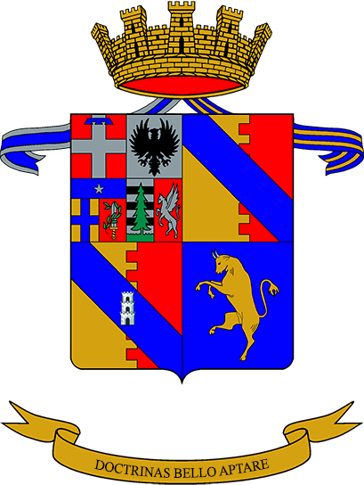

Una rete istituzionale, culturale e professionale che riunisce Alumni, studenti, docenti e sostenitori della Scuola Universitaria Interdipartimentale in Scienze Strategiche.
Portale iscrizioni
È disponibile la procedura online per richiedere l'ammissione all'Associazione.
Statuto
Il documento statutario è disponibile nella sezione Amministrazione trasparente.
Incontri Alumni
Calendario in aggiornamento con conferenze, reunion e appuntamenti istituzionali.
Webinar professionali
Spazio dedicato a sicurezza, difesa, geopolitica e carriere strategiche.
Networking
Costruzione progressiva della rete professionale Alumni SUISS.
Mentorship
Programma dedicato al collegamento tra studenti, giovani Alumni e professionisti.
L'Associazione Alumni SUISS nasce per consolidare il legame tra la Scuola, i suoi Alumni, gli studenti, i docenti e le realtà istituzionali e professionali che condividono l'interesse per le scienze strategiche.
La missione dell'Associazione è promuovere relazioni culturali e professionali, valorizzare il percorso degli Alumni e favorire lo scambio di conoscenze nei campi della sicurezza, della difesa, delle relazioni internazionali, della governance e dell'analisi strategica.
Consiglio Direttivo La nostra storia
La community Alumni SUISS è pensata come uno spazio di connessione tra profili accademici, professionali, istituzionali e militari, con l'obiettivo di generare relazioni durevoli e occasioni concrete di collaborazione.
Spazi dedicati a sicurezza, difesa, geopolitica, cyber, intelligence, diplomazia, pubblica amministrazione e settore privato.
Reti territoriali per favorire incontri, contatti professionali e iniziative tra Alumni in Italia e all'estero.
Occasioni periodiche di confronto tra studenti, ex studenti, docenti, istituzioni e partner dell'Associazione.
Una sezione dedicata alla crescita professionale degli Alumni e degli studenti, con strumenti di orientamento, segnalazione di opportunità e valorizzazione delle competenze maturate nel percorso SUISS.
Area destinata alla pubblicazione di opportunità professionali, internship, bandi, call for application e collaborazioni.
Segnala opportunitàIncontri con Alumni e professionisti per approfondire percorsi di carriera nei settori strategici, pubblici e privati.
Vedi eventiLa directory è pensata per facilitare la ricerca e il contatto tra membri della rete Alumni. In una versione pubblica può mostrare solo profili autorizzati; in una versione privata può essere accessibile tramite login.
Modulo dimostrativo: per renderlo operativo su GitHub Pages serve collegarlo a un database esterno, a un foglio Google o a un servizio backend.
Il programma mentorship collega studenti e giovani Alumni con profili più esperti, favorendo orientamento, confronto professionale e trasmissione di competenze.
Orientamento su percorsi accademici, tirocini, concorsi, prime esperienze professionali e scelta del settore.
Supporto nella transizione verso ruoli professionali, istituzionali, militari, diplomatici, aziendali o di ricerca.
Possibilità di contribuire alla crescita della community mettendo a disposizione esperienza, competenze e network.
In questa sezione sono raccolti aggiornamenti, incontri, conferenze, webinar, iniziative culturali e appuntamenti ufficiali dell'Associazione.
Incontro annuale dedicato alla community Alumni SUISS, con momenti istituzionali e networking.
Panel tematici su sicurezza internazionale, difesa, geopolitica e trasformazioni dello scenario globale.
Appuntamenti con Alumni e professionisti per raccontare percorsi, competenze e opportunità.
Esplora le raccolte fotografiche degli eventi, degli incontri e delle iniziative promosse dall'Associazione Alumni SUISS.
Vai alla GalleryPossono aderire Alumni, studenti, docenti e sostenitori secondo le categorie associative previste dallo Statuto. La richiesta di ammissione può essere inviata attraverso il portale dedicato.
Accedi al portale iscrizioniSostieni le attività culturali, formative e professionali dell'Associazione Alumni SUISS.
Richiedi coordinateVia dell'Arsenale 22
Torino (TO) 10121
+39 3274331196
segreteria@alumnisuiss.it
Coordinate IBAN
Inserire qui intestatario, IBAN e causale consigliata per donazioni o quote associative.
Seguici sui nostri canali social ufficiali.
In questa sezione sono pubblicati i documenti ufficiali dell'Associazione Alumni SUISS.
Informativa sul trattamento dei dati personali ai sensi del GDPR.
Visualizza documentoArea destinata alla pubblicazione di atti, regolamenti, bilanci e documentazione associativa.
In aggiornamento EN
EN